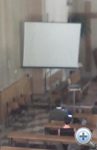
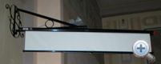
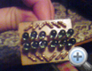
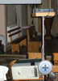
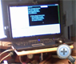
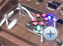
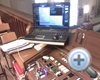

Már régebben szükségesnek láttuk, hogy a híveknek sgítséget nyújtsunk ahoz, hogy a Szentmise alatti énekekbe minél többen könnyen be tudjanak kapcsolódni. Többféle változatot kipróbáltunk: kezdetben un. éneklapokat készítettünk (ezeknek többnyire hamar "lába kelt".)
Aztán egy 3 szegmenses számkijelzővel próbáltuk az éppen soron következő ének számát megjelníteni. Ezzel az volt a baj, hogy a híveknél talaható énekeskönyvek különbözőek voltak. Egyeseknek "Hozsannájuk", másoknak "Éneklő Egyházuk" volt, de sokan egyáltalán semmilyen forrással nem rendelkeztek, így az ének számával nem sokat értek.
A kijelző kezelése ugyanakkor nagyon nehézkes volt. Egy 3 db. forgotárcsát tartalmazó kapcsoló vezérelte, ennek kezelése - főleg több, egymásután következő ének megjelenítésekor - komoly kihívás elé állította a kántort. Így hát lassanként elenyészett a kezdeményezés.
 Aztán - 2008 nyara végén - a Plébános Úr szorgalmazására, újra elkezdtünk foglalkozni a dologgal. A "Plébi" felajánlotta a plébánian található vetítőgépet és a saját notebookját. Mivel nem teljesen idegen tőlem a számítástehnika, úgy gondoltam, ezzel a felszereléssel már nem nagy ördöngősség a vetítést megoldani. Kis erőfeszítéssel, az énekrend előzetes begépelésével, akár Word-ból, akár PowerPoint-ból viszonylag könnyen megoldható a vetítés. És működöt...
Csakhogy, a kényelem nagy úr! Igaz, ami igaz, nem sok kedvem volt a szombat estéket azzal tölteni, hogy többtíz-sornyi szöveget begépeljek... Elkezdtem hát keresgélni a NET-en, és az első találatok között ott volt a DIATÁR! Nemcsak, hogy tartalmazza az összes, általában (legalábbis nálunk) használt ének-szöveget, de ezen felűl egy nagyon jól kezelhető, kézreálló kezelőfelületet is biztosít a vetítéshez. Ráadásúl - a fejlesztő jóvoltából - teljesen ingyen!. Gondoltam, kipróbálom. Nem sok probálkozás kellett, hogy lássam, ez pontosan az, amit (csak úgy, magamban) megvalósításként elképzeltem. Azonnal használatba is vettem.
Úgy működött, hogy a padsor mellet elhelyezett asztalon volt a laptop, arról vezérelte a vetítést a kezelő. A vásznat - kezdetben - saját álványán, a szentély baloldalán állítottuk föl. Csakhogy hamar jelentkeztek a megoldás hátrányai is. Például, ha valami miatt az énekrendet módosítani kellett volna, akkor "bukta"! Nem volt rá lehetőség. Néha pedig a kezelő nézte el a váltás pillanatát, és csak a következő versszak közepén váltott. Szóval ez nem igazán volt rendben. Mást kellett kitalálni. Íme, mire jutottunk:
A Vetítő elhelyezését hamar megoldottuk. Itthon talaható anyagokból összeszereltünk egy állványt, ezt padsor baloldalán, a padhoz rögzítettünk, erre került a vetítő.
A vetítővászon kezdetben a saját talpazatán állt, de hamarosan, egy segítőkész szakember segítségével csinos tartókonzol készült, amivel a vásznat fejmagasság fölé, a falra tudtuk rögzíteni. Így már gyakorlatilag senkit sem zavar, de mindenki jól láthatja. A konzol mozgatható, igy a vásznat szükség szerint be tudjuk állítani. A vászon "házát" és a "feltekerő mehanizmusát" megtartottuk, így hét közben - hogy a vásznat megóvjuk a porosodástól - visszahúzzuk azt a házába.
Mostmár csak a vetítés vezérlését kellett megoldanunk. A kb. 50m-es video-kábel nem tünt jó megoldásnak. Nem is igen tudtam, honnan szerezhetném be, és abban sem voltam biztos, hogy mőködne (bár Hozé szerint igen). Ezért más megoldást kerestünk.
Azért a többesszám, mert a vezérlés kitalálásában - gyakorlatilag - én csak az ötletgazda voltam (néha még az sem). A konkrét megvalósítások, a fiam művei.
Első ötlet az volt, hogy készítünk egy PIC-vezérelt távirányítót. Ez az ötlet onnan származott, hogy a számítógép vezérlésére már régebben is használtam(tunk) egy IR-vevőt (hasonlót ahoz amit TV-k, és hasonló eszközök távirányításásra használnak). Ennek a jeleit egy Girder nevű progi fogadta és dogozta fel. Ezzel, gyakorlatilag, a számítógép bármilyen funkciója vezérelhető. A progrtam (egy plug-in segítségével - ha esetleg az előző link nem működne itt lehet keresgélni -) a TV távirányítóknál is használt, idő-intervallum kiértékelésén alapuló prtokollt alkalmaz. A rendelkezésre álló távirányítók kódját, egy PIC-vezérelt kapcsolással, "viszonylag könnyen" visszafejtettük. Persze, egy TV távirányító hatótávolsága csekély, igy ez a templomban használhatatlan.
 Úgy gondoltuk, hogy, ha 1 darab IR-LED helyett egy LED-csoportot használnánk, elég teljesítményt kapunk ahoz, hogy nagyobb távolságból is működjön a cucc. Ennél nagyobb tévedést!?! Sajnos a LED-ek nem úgy működnek, ahogy mi elképzeltük. Valószínűleg a gyújtási fáziskésésük (vagyis az, hogy nem egyszerre kapcsolnal be és ki, akkor sem, ha egyforma jelet kapnak) volt az oka annak, hogy még az 1 LED-es távirányító hatótávolságát sem értük így el. Erről tehát le kellet mondanunk. Egyébként, ha működött volna, akkor sem oldotta volna meg azt, hogy "menet közben" ie elvégezhetőek legyenek az esetleges módosítások.
Közben azzal is kísérleteztem, hogy - a saját laptopomat is beüzemelve - a két gép között un. ad-hock WiFi-s kapcsolatot hoztak létre, így már tudtam a kórusról vezérelni a vetítést. Az ad-hock kapcsolat azonban nem a legsikeresebb választás. A kapcsolat létrehozásához ugyanis minkét géphez hozzá kell férni. Ha üzem közben valami miatt (pd. bekapcsol a képernyővédő) megszakad a kapcsolat, újabb bukta. Nem mindig lehet futkározni egyik géptől a másihoz. És biza előfordúlt, amikor legkevésbé szerettem volna.
Végül úgy döntöttünk, hogy a kétgépes megoldást fejlesztjük ki. Legyen 1 gép a vetítő közelében. Ez vezérli a vetítőt a padsor mellől. Ezt a gépet akár helyileg, akár távirányítással vezérelhetjük. A második gép a kóruson lesz, az orgona közelében, erről lehet távirányítani az előbbit. Ez a változat egyúttal azt is megoldja, hogy akár a kórusról, akár a pad mellől vezérelhető a vetítés. A két gép közötti kapcsolat lehet LAN-kábel, vagy WiFi.
 Az itthoni gépfelújítások alkalmával félretett alkatrészekből összeraktunk egy gépet. Ez lett a vetítő. (Szinte minden megvolt, csak a házzal volt egy kis fennakadás. Fekvő házat szerettem vola, de ez végűl nem jött össze, ezért egy álló házet "fektettünk" le.) A távolság miatt, szinte annyiba került volna a LAN-kábel, mint amennyiért tudtunk venni egy WiFi routert. Így a hálozat WiFi lett.
 A vezélő gép - egyelőre - a saját laptopom (kényelmesebb így, mintha a plébi laptopját csenném el minden alkalommal). A későbbiekben ide is szeretnénk egy "fix" gépet telepíteni. Ugyanaz a szaki, aki a vászon konzolját készítette, most is segített, és a laptopnak is lett állványa. Ha meglessz ide is a gép, erre az állványra kerül majd a monitor, és ide rögzítjük a billentyűzet és az egér "asztalát" is.
A vetítés kezelése azonban még így is nehézkes volt. Kellett egy vezérlő gombsor.
Mivel a programba bele van építve a kezeléséhez szükséges protokoll, ez már nem volt túl bonyolult. A rendszer alapja egy PIC16F876 típusu mikrokontroller. Azért választottuk ezt, mert:
 Az orgona játszóasztalába sajnos nem lehetett beépíteni a gombsort, ezért a rendszert úgy alakítottuk ki, hogy egy külön dobozba került a "logika", és az orgona asztalára csak a gombokat tartó (igaz, nem túl elegáns) tartóhíd került. Jelenleg 6 gombot használunk (a lehetséges 8-ból). Ezek: léptetés előre-hátra, ugrás az előző-következő énekre, vetítés ki-bekapcsolása, valamint a háttérkép ki-bekapcsolása.
 Így elkészült a jelenleg véglegesnek mondható hardware-kiépítés.
Itt a vezérlő áramköri rajza. A rajz csak vázlatos, pontos értékeket nem tartalmaz.
Ez pedig a PIC vezérlőkódja . Kisebb mődosításokkal más típusú PIC-re is átültethető.
Ennyire jutottunk egyelőre. További fejlesztésekről alkalomadtán, természetesen, majd beszámolok.
Ha valakit részletesebben érdekelne a megoldás egyik-másik részlete, vagy bármi más kérdése, kérése lenne, szívesen állok rendelkezésre. Ha beüzemelési gondok adódnak, akár - előzetes egyeztetést küvetően - távirányításos segítséget is nyujtani tudok. Üzenetet itt lehet küldeni
{kind=link}
{kind=link}
{kind=link}
{kind=link}
{kind=link}
{kind=link}
{kind=link}
{kind=link}